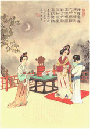
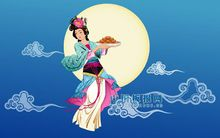
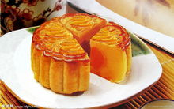
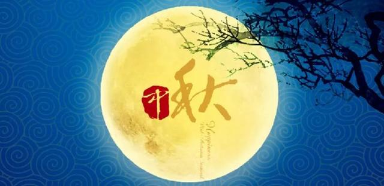

关于中秋节的起源，说法较多。中秋一词，最早见于《周礼》，《礼记·月令》上说：“仲秋之月养衰老，行糜粥饮食。”

一说它起源于古代帝王的祭祀活动。《礼记》上记载：“天子春朝日，秋夕月”，夕月就是祭月亮，说明早在春秋时代，帝王就已开始祭月、拜月了。后来贵族官吏和文人学士也相继仿效，逐步传到民间。
二是中秋节的起源和农业生产有关。秋天是收获的季节。“秋”字的解释是：“庄稼成熟曰秋”。八月中秋，农作物和各种果品陆续成熟，农民为了庆祝丰收，表达喜悦的心情，就以“中秋”这天作为节日。“中秋”就是秋天中间的意思，农历的八月是秋季中间的一个月，十五日又是这个月中间的一天，所以中秋节可能是古人“秋报”遗传下来的习俗。
也有历史学家研究指出，中秋节起源应为隋末唐军于大业十三年八月十五日，唐军裴寂以圆月作为构思，成功发明月饼，并广发军中作为军饷，成功解决因大量吸收反隋义军而衍生之军粮问题。
中秋节赏月的风俗，据历史学家推断，最初是古代宫廷文人兴起，然后扩散到民间的。早在魏晋乐府《子夜四十歌》中，就有一首《秋有月》描写道：“ 仰头望明月，寄情千里光”。在唐代，中秋赏月、玩月颇为盛行， [6] 许多诗人的名篇中都有咏月的诗句，中秋节开始成为固定的节日，《唐书·太宗记》记载就有“八月十五中秋节”。传说唐玄宗梦游月宫，得到了霓裳羽衣曲，民间才开始盛行过中秋节的习俗。

北宋，正式定八月十五为中秋节，并出现“小饼如嚼月，中有酥和饴”的节令食品。孟元老《东京梦华录》说：“中秋夜，贵家结饰台榭，民间争占酒楼玩月”；而且“弦重鼎沸，近内延居民，深夜逢闻笙芋之声，宛如云外。间里儿童，连宵婚戏；夜市骈阗，至于通晓。”吴自牧《梦梁录》说：“此际金凤荐爽，玉露生凉，丹桂香飘，银蟾光满。王孙公子，富家巨室，莫不登危楼，临轩玩月，或开广榭，玳筵罗列，琴瑟铿锵，酌酒高歌，以卜竟夕之欢。至如铺席之家，亦登小小月台，安排家宴，团围子女，以酬佳节。虽陋巷贫篓之人，解农市酒，勉强迎欢，不肯虚度。此夜天街卖买，直至五鼓，玩月游人，婆婆于市，至烧不绝。”更有意思的是，《新编醉翁谈录》记述拜月之俗：“倾城人家子女不以贫富能自行至十二三，皆以成人之眼眼饰之，登楼或中庭焚香拜月，各有所朝；男则愿早步蟾宫，高攀仙桂。……女则愿貌似嫦娥，圆如皓月。”
明清两朝的赏月活动，盛行不衰。“其祭果饼必圆”；各家都要设“月光位”，在月出方向“向月供而拜”。陆启泓《北京岁华记》载：“中秋夜，人家各置月宫符象，符上免如人立；陈瓜果于庭，饼面绘月宫蟾免；男女肃拜烧香，旦而焚之。”田汝成《西湖游览志余》云：“是夕，人家有赏月之宴，或携柏湖船，沿游彻晓。苏堤之上，联袂踏歌，无异白日”；“民间以月饼相邀，取团圆之义”。富察敦崇《燕京岁时记》称：“中秋月饼，以前门致美斋者为京都第一，他处不足食也。呈供月月饼到处皆有。大者尺余，上绘月宫蜡兔之形。”“每届中秋，府第朱门皆以月饼果品相馈赠。至十五月圆时，陈瓜果于庭以供月，并祀以毛豆、鸡冠花。是时也，皓魄当空，彩云初散，传杯洗盏，儿女喧哗，真所谓佳节也。唯供月时男子多不叩拜。”同时这五百多年中还推出“烧斗香”、“走月亮”、“放天灯”、“树中秋”、“点塔灯”、“舞火龙”、“曳石”、“卖兔儿爷”等节庆活动；其中的赏月，吃月饼、团圆饭等习俗，一直流传到今天。
中秋节是中国的传统佳节。根据史籍的记载，“中秋”一词最早出现在《周礼》一书中。到魏晋时，有“谕尚书镇牛淆，中秋夕与左右微服泛江”的记载。直到唐朝初年，中秋节才成为固定的节日。《唐书·太宗记》记载有“八月十五中秋节”。中秋节的盛行始于宋朝，至明清时，已与元旦齐名，成为中国的主要节日之一。这也是中国仅次于春节的第二大传统节日。

2008年开始中国大陆将中秋节列为法定假期，如当天与周“中秋节”心智图“中秋节”心智图六周日重合，则在下周一补休一天。
在台湾，中秋节当天放假一天，若与周六、日重叠则不另外补假，但若与周休假期仅相隔一工作日者，该工作日则调为假期，并择另一星期六补班补课。
香港的中秋节公众假期定在农历八月十六日（中秋节翌日）。如果碰上星期日，则在星期一补一天假；如果碰上星期六则没有补假。
韩国把中秋节列为法定假期，放假3天。